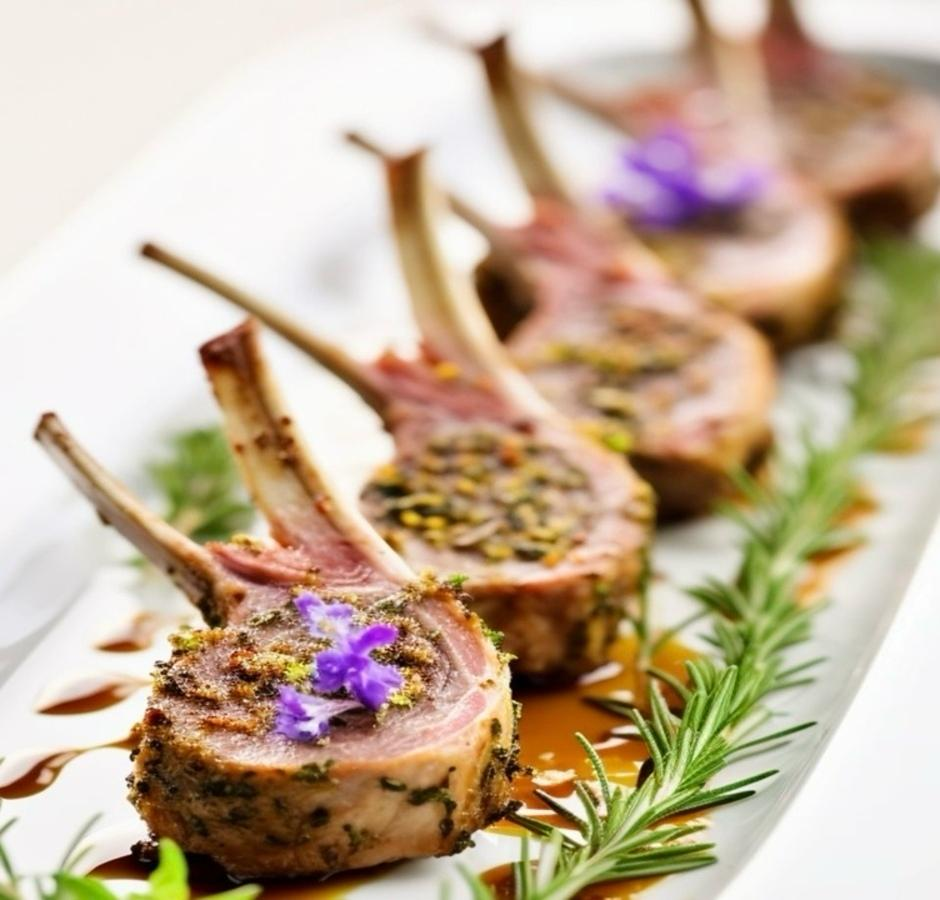
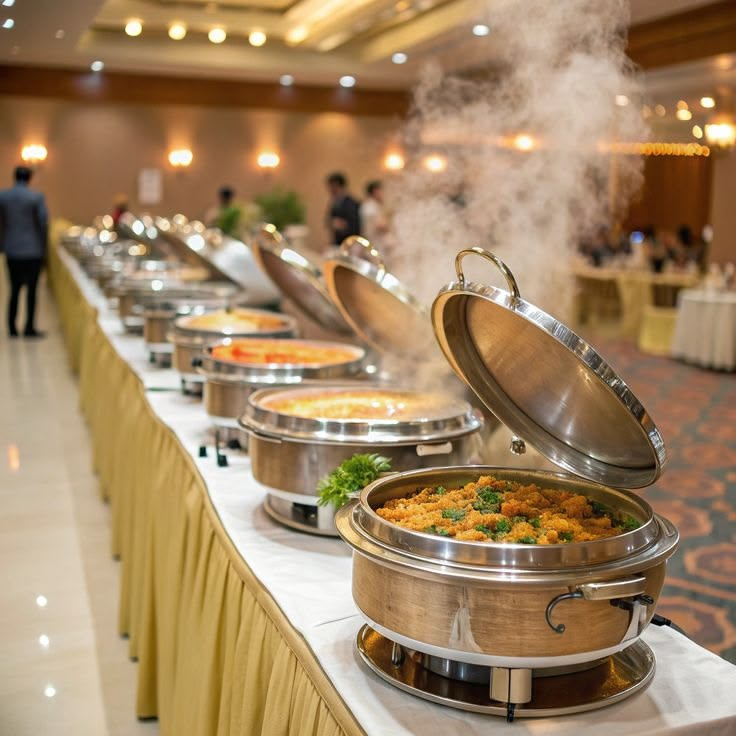
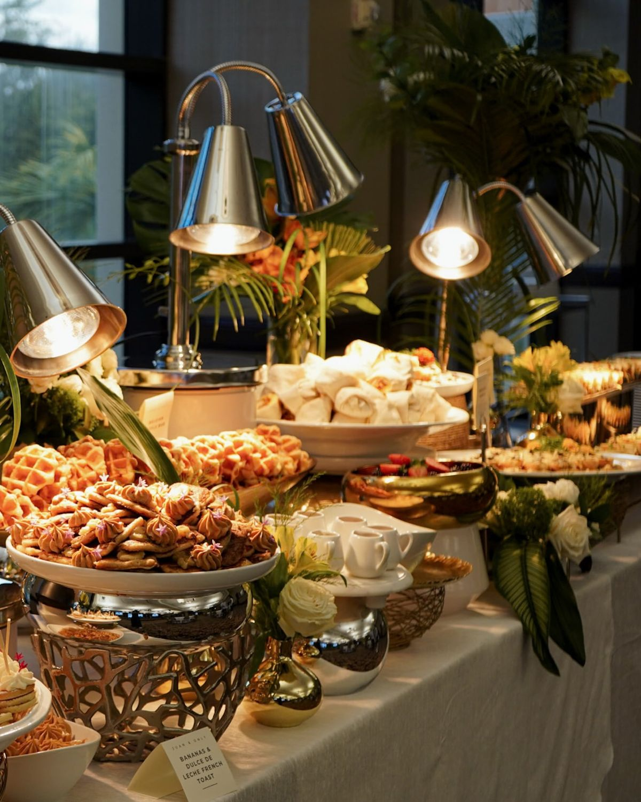
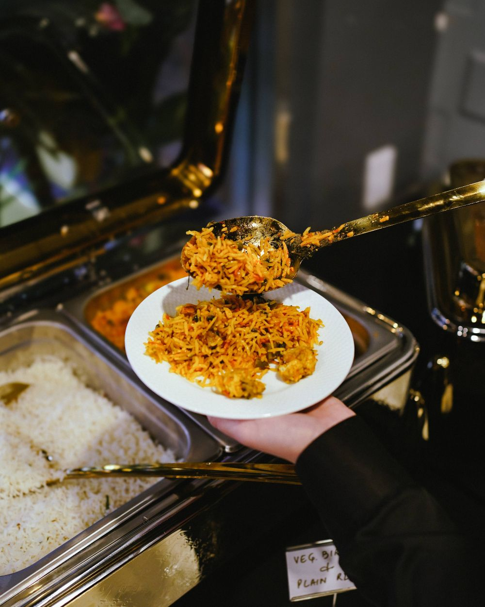
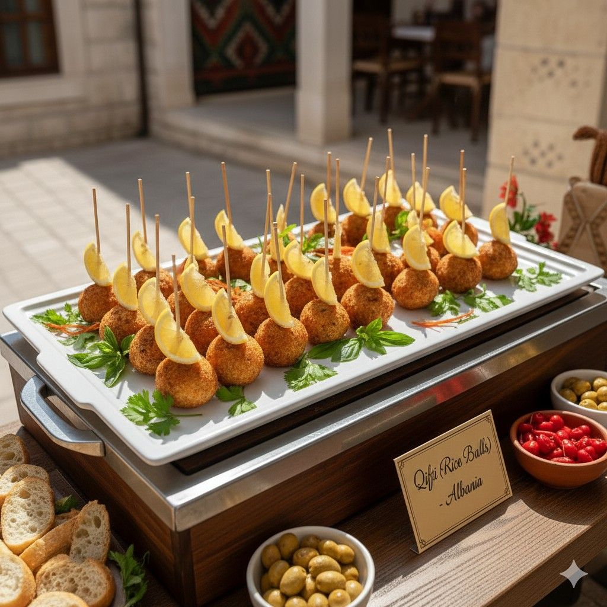
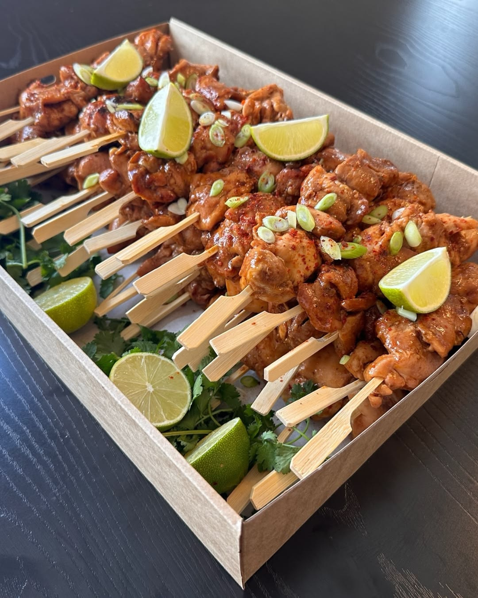
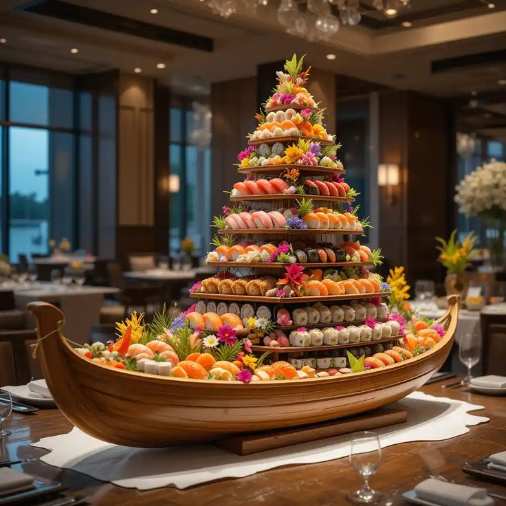

Wedding feasts
Grand multi-course menus, served with care from muhurtham to reception.
Explore service
Tamil Nadu’s trusted celebration caterer
Thoughtful Tamil hospitality, generous flavours and flawless event service for the celebrations your family will remember.
A feast with feeling
For more than a decade, Tamil Virundhu has brought the warmth of a family feast to weddings, receptions, temple functions and milestone occasions.
Discover our storyMade for every occasion
Grand multi-course menus, served with care from muhurtham to reception.
Explore service
Warm, personal catering for birthdays, housewarmings and family milestones.
Explore service
Interactive dosa, chaat and grill counters that bring energy to the room.
Explore service

The Tamil Virundhu way
We pair recipes that feel like home with a polished, contemporary event experience. Behind every table is a calm crew, a well-timed plan and a kitchen that cooks with pride.

Signature experience
From banana-leaf classics to elegant plated menus, we shape the food around the atmosphere you want to create.
A calm, clear process
Tell us your date, guests, venue and the feeling you want to create.
We shape a tailored menu, staffing plan and service rhythm.
Our team handles the details while you stay present with your guests.



“
They understood the emotion behind our wedding and made every guest feel cared for. The food was generous, elegant and unmistakably ours.
From sunrise to send-off
We plan the energy of the day as carefully as the menu—bright beginnings, generous middays and memorable final courses.

Filter coffee, mini tiffin and a graceful first welcome for every guest.

A generous wedding lunch paced for conversation, comfort and celebration.

Late coffee, desserts and thoughtful bites for a lasting goodbye.
Planning, made simple
Not sure where to begin? These are the details families ask us about most often.
Read all FAQsFor weddings and peak muhurtham dates, we recommend reaching out 8–12 weeks ahead. We also welcome enquiries for smaller celebrations at shorter notice.
Yes. Your menu is shaped around the event style, guest profile, family favourites and dietary requirements.
Yes. We can provide chefs, live counters, service captains, trained floor staff and a complete event food plan.